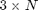
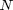
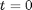
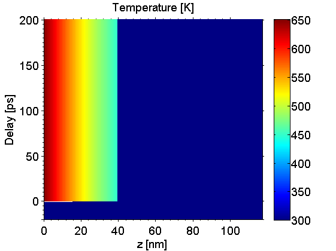
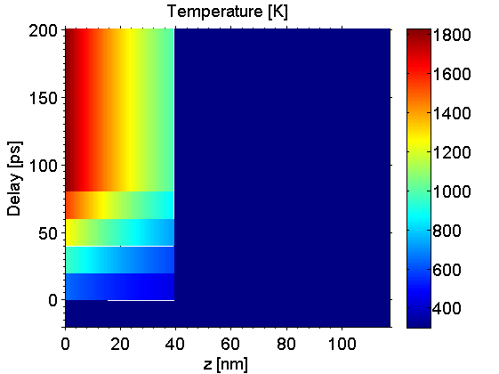
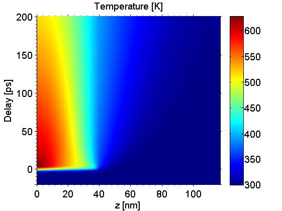
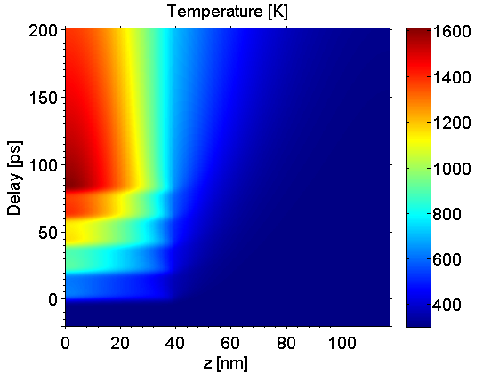

Heat Excitation Example
In this example we show how to change the excitation for the heat simulation. The default excitation is instantaneous at time zero. Further we can also introduce multipulse excitation, as well as finite pulse duration for the pump pulse.
Before we can start a heat simulation we need to build a sample structure. Be aware of that heat diffusion simulations can take a tremendous amount of time, especially for structures with a large number of unit cells.
Be sure to include all folders of the udkm1dsim toolbox to your MATLAB search path. Especially the /parameters and /helpers folders with all their subfolders.
Contents
here we clear the workspace and close all figures
clear all; close all; % these are some units and constants we can use later on u = units; const = constants;
Build a Sample Structure
O = atomBase('O'); Ti = atomBase('Ti'); Sr = atomBase('Sr'); Ru = atomBase('Ru'); Pb = atomBase('Pb'); Zr = atomBase('Zr'); cSTOsub = 3.905 *u.ang; cSRO = 3.94897 *u.ang; svSRO = 6.312 *u.nm/u.ps; svSTO = 7.800 *u.nm/u.ps; propSRO.aAxis = cSTOsub; % aAxis propSRO.bAxis = cSTOsub; % bAxis propSRO.debWalFac = 0; % Debye-Waller factor propSRO.soundVel = svSRO; % sound velocity propSRO.optPenDepth = 43.8*u.nm; % optical penetration depth propSRO.thermCond = 5.72*u.W/(u.m *u.K); % heat conductivity propSRO.linThermExp = 1.03e-5; % linear thermal expansion propSRO.heatCapacity = @(T)(455.2 + 0.112.*T - 2.1935e6./T.^2); % heat capacity [J/kg K] SRO = unitCell('SRO','SRO',cSRO,propSRO); SRO.addAtom(O,0); SRO.addAtom(Sr,0); SRO.addAtom(O,0.5); SRO.addAtom(O,0.5); SRO.addAtom(Ru,0.5); propSTOsub.aAxis = cSTOsub; % aAxis propSTOsub.bAxis = cSTOsub; % bAxis propSTOsub.debWalFac = 0; % Debye-Waller factor propSTOsub.soundVel = svSTO; % sound velocity propSTOsub.optPenDepth = Inf; % optical penetration depth propSTOsub.thermCond = 12*u.W/(u.m *u.K); % heat conductivity propSTOsub.linThermExp = 1e-5; % linear thermal expansion propSTOsub.heatCapacity = @(T)(733.73 + 0.0248.*T - 6.531e6./T.^2); % heat capacity [J/kg K] STOsub = unitCell('STOsub', 'STOsub', cSTOsub, propSTOsub); STOsub.addAtom(O,0); STOsub.addAtom(Sr,0); STOsub.addAtom(O,0.5); STOsub.addAtom(O,0.5); STOsub.addAtom(Ti,0.5); S = structure('Single Layer'); S.addSubStructure(SRO,100); % add 100 layers of SRO to sample S.addSubStructure(STOsub,200); % add 250 layers of STO substrate distances = S.getDistancesOfUnitCells();
Initialize Heat Simulation
cacheDir = './cache'; forceRecalc = false; H = heat(S,forceRecalc); H.setCacheDir(cacheDir); % set the cache directory time = (-20:0.1:200)*u.ps; fluence = 5*u.mJ/u.cm^2; initTemp = 300*u.K;
Instantaneous Excitation
The excitation for the getTempMap method can be either a scalar or matrix of  entries, where  is the number of pulses. The first example is an instantenous excitation at :
pulseWidth = 0*u.ps; excitation(1,:) = fluence; % fluence excitation(2,:) = 0; % time when the excitation happens excitation(3,:) = pulseWidth; % pulse width of the excitation % The resulting temperature profile is calculated in one line: tempMap = H.getTempMap(time,excitation,initTemp);
Elapsed time for _temperatureAfterDeltaExcitation_: 0.35679 seconds. Elapsed time for _tempMap_: 0.40903 seconds. _tempMap_ saved to file .\cache\tempMap_3a6e1dd66ca5f2a993b7927c81ef487a_ebd8a3524969b9c2491e1e311c7d606a.mat
plot the results:
figure(1) kk = surf(distances/u.nm,time/u.ps,tempMap); set(kk, 'LineStyle', 'none'); title('Temperature [K]'); xlabel('z [nm]'); ylabel('Delay [ps]'); axis([distances(1)/u.nm distances(end)/u.nm time(1)/u.ps time(end)/u.ps]) box; colorbar; colormap(jet(255)); set(gca, 'XMinorTick', 'on', 'YMinorTick', 'on', 'TickDir', 'out');
Multipulse Excitation
For multiple excitations we only have to add fluences, timePump, and optionally pulseWidth (default = 0) to the excitation.
clear excitation; N = 5; % number of pulses pulseSep = 20*u.ps; excitation(1,:) = fluence*ones(N,1); % fluence excitation(2,:) = pulseSep*(0:N-1); % time when the excitation happens excitation(3,:) = pulseWidth*ones(N,1); % pulse width of the excitation % The resulting temperature profile is calculated in one line: tempMap = H.getTempMap(time,excitation,initTemp);
Elapsed time for _temperatureAfterDeltaExcitation_: 0.24563 seconds. Elapsed time for _temperatureAfterDeltaExcitation_: 0.24124 seconds. Elapsed time for _temperatureAfterDeltaExcitation_: 0.24697 seconds. Elapsed time for _temperatureAfterDeltaExcitation_: 0.24167 seconds. Elapsed time for _temperatureAfterDeltaExcitation_: 0.23913 seconds. Elapsed time for _tempMap_: 1.2432 seconds. _tempMap_ saved to file .\cache\tempMap_3a6e1dd66ca5f2a993b7927c81ef487a_236959c76e57f52a8ce21917f3b1a9f6.mat
plot the results:
figure(2) kk = surf(distances/u.nm,time/u.ps,tempMap); set(kk, 'LineStyle', 'none'); title('Temperature [K]'); xlabel('z [nm]'); ylabel('Delay [ps]'); axis([distances(1)/u.nm distances(end)/u.nm time(1)/u.ps time(end)/u.ps]) box; colorbar; colormap(jet(255)); set(gca, 'XMinorTick', 'on', 'YMinorTick', 'on', 'TickDir', 'out');
Finite Pulse Width Excitation
In order to introduce a finite pulse length for the excitation we need to enable heat diffusion.
clear excitation; H.heatDiffusion = true; pulseWidth = 5*u.ps; N = 1; % number of pulses excitation(1,:) = fluence*ones(N,1); % fluence excitation(2,:) = pulseSep*(0:N-1); % time when the excitation happens excitation(3,:) = pulseWidth*ones(N,1); % pulse width of the excitation % The resulting temperature profile is calculated in one line: tempMap = H.getTempMap(time,excitation,initTemp);
Calculating _heatDiffusion_ ... Elapsed time for _heatDiffusion_: 1.7696 seconds. Calculating _heatDiffusion_ for excitation 1 ... Elapsed time for _heatDiffusion_ with 1 excitation(s): 10.8156 seconds. Calculating _heatDiffusion_ ... Elapsed time for _heatDiffusion_: 4.6529 seconds. Elapsed time for _tempMap_: 17.3597 seconds. _tempMap_ saved to file .\cache\tempMap_3a6e1dd66ca5f2a993b7927c81ef487a_3682c235c941aa07126a8ec85ec726a1.mat
plot the results:
figure(3) kk = surf(distances/u.nm,time/u.ps,tempMap); set(kk, 'LineStyle', 'none'); title('Temperature [K]'); xlabel('z [nm]'); ylabel('Delay [ps]'); axis([distances(1)/u.nm distances(end)/u.nm time(1)/u.ps time(end)/u.ps]) box; colorbar; colormap(jet(255)); set(gca, 'XMinorTick', 'on', 'YMinorTick', 'on', 'TickDir', 'out');
Multipulse Excitation with Finite Pulse Width
Now we can easily combine the last two example:
clear excitation; N = 5; % number of pulses excitation(1,:) = fluence*ones(N,1); % fluence excitation(2,:) = pulseSep*(0:N-1); % time when the excitation happens excitation(3,:) = pulseWidth*ones(N,1); % pulse width of the excitation % The resulting temperature profile is calculated in one line: tempMap = H.getTempMap(time,excitation,initTemp);
Calculating _heatDiffusion_ ... Elapsed time for _heatDiffusion_: 1.4664 seconds. Calculating _heatDiffusion_ for excitation 1 ... Elapsed time for _heatDiffusion_ with 1 excitation(s): 10.5376 seconds. Calculating _heatDiffusion_ ... Elapsed time for _heatDiffusion_: 3.3568 seconds. Calculating _heatDiffusion_ for excitation 2 ... Elapsed time for _heatDiffusion_ with 1 excitation(s): 14.788 seconds. Calculating _heatDiffusion_ ... Elapsed time for _heatDiffusion_: 3.5487 seconds. Calculating _heatDiffusion_ for excitation 3 ... Elapsed time for _heatDiffusion_ with 1 excitation(s): 13.744 seconds. Calculating _heatDiffusion_ ... Elapsed time for _heatDiffusion_: 3.5718 seconds. Calculating _heatDiffusion_ for excitation 4 ... Elapsed time for _heatDiffusion_ with 1 excitation(s): 16.7683 seconds. Calculating _heatDiffusion_ ... Elapsed time for _heatDiffusion_: 3.6871 seconds. Calculating _heatDiffusion_ for excitation 5 ... Elapsed time for _heatDiffusion_ with 1 excitation(s): 15.6547 seconds. Calculating _heatDiffusion_ ... Elapsed time for _heatDiffusion_: 4.4152 seconds. Elapsed time for _tempMap_: 91.8475 seconds. _tempMap_ saved to file .\cache\tempMap_3a6e1dd66ca5f2a993b7927c81ef487a_91e5ecaaf3ae77bc8864276d24d9446b.mat
plot the results:
figure(4) kk = surf(distances/u.nm,time/u.ps,tempMap); set(kk, 'LineStyle', 'none'); title('Temperature [K]'); xlabel('z [nm]'); ylabel('Delay [ps]'); axis([distances(1)/u.nm distances(end)/u.nm time(1)/u.ps time(end)/u.ps]) box; colorbar; colormap(jet(255)); set(gca, 'XMinorTick', 'on', 'YMinorTick', 'on', 'TickDir', 'out');